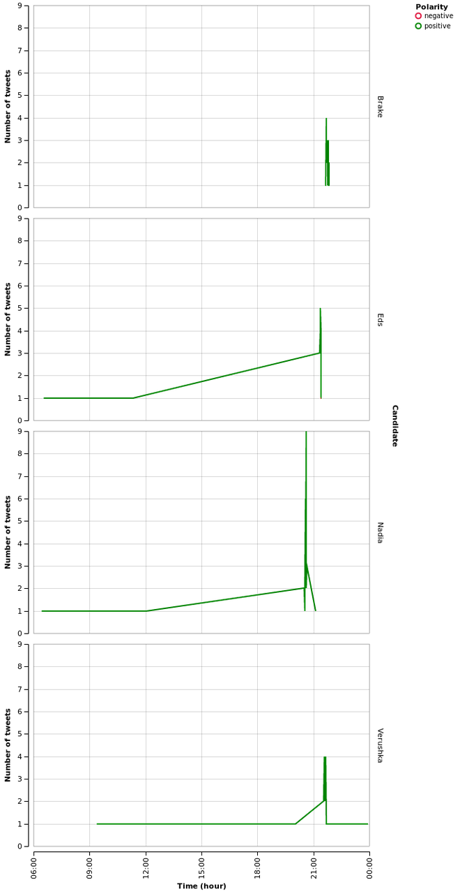

The Voice Afrique Tweets Mining Part 4
Sentiment Analysis
Previously, we explore topic modeling an algorithm used to discover what users are talking about. But often, its not important to know what users are saying, but how they are saying it. Sentiment analysis seeks to automatically associate a piece of text with a sentiment score, a positive or negative emotional score. Aggregating sentiment can give an idea of how people are responding to an event or a topic.
The way this task is usually done is by using Supervised learning principles. First, we find a lexicon, a dictionary of sentences (tweets in this context) and thier positive, neutral or negative labels. We then use a training algorithm to learn the words - polarity association. It means the algorithm learns what words or features are associated with which labels. Finally, we pass to the algorithm our own (useen) tweets and it judges whether the text in the is positive or negative based on the likelihood for each possibility.
For this to work properly, we need to be carefull about the source of the lexicon we're choosing. Words having different meaning in diffrent contexts. In this post, we don't have a lexicon nor want to build one. We will rely instead on the concept of mutual information to detect the polarity of the tweet.
Mutual information
Pointwise Mutual Information (PMI) is a measure of association between two events. The PMI of a pair of outcomes \(x\) and \(y\) to discrete random variables \(X\) and \(Y\) quantifies the discrepancy between the probability of their coincidence given their joint distribution and their individual distributions, assuming independence an is given by:
\begin{equation*} pmi(x;y) = \log{\frac{p(x,y)}{p(x)p(y)}} \end{equation*}
where \(p(x)\) and \(p(y)\) are the marginals and \(p(x,y)\) is the joint distribution.
The idea behind this choice is to use a set set or an anchor (a word that carry strong polarity) of positve and negative words (we could derive them from tweets) and for each word int the tweet, we measure thier coccurences (with PMI) with these words.
In this post, we will use a slight variant of PMI, th Normalized pointwise mutual information (NPMI) given by:
\begin{equation*} npmi(x,y) = \frac{pmi(x,y)}{h(x,y)} \end{equation*}
where \(h(x,y) = -\log p(x,y)\)
import re import string from datetime import datetime import numpy as np import pandas as pd import emoji import altair from pymongo import MongoClient from twitter.parse_tweet import Emoticons from nltk.tokenize import TweetTokenizer from nltk.corpus import stopwords from nltk.collocations import BigramCollocationFinder np.random.seed(42) host = "localhost" port = 27017 db = MongoClient(host, port).search
Load the tweets.
cols = ["created_at", "tweet"] tweets = pd.DataFrame(columns=cols) for tweet in db.thevoice.find(): if not("retweeted_status" in tweet.keys()): data = dict(zip(cols,[tweet["created_at"], tweet["text"]])) tweets = tweets.append(pd.DataFrame(data, index=[0]), ignore_index=True)
Since the created_at field was store as a string during
data collection,
we use the strptime helper to restore the values in this field to a valid Python's
datetime object.
def strptime(ts): cformat = "%a %b %d %H:%M:%S %Y" uformat = "%a %b %d %H:%M:%S %z %Y" ctime = datetime.strptime(ts, uformat).ctime() return datetime.strptime(ctime, cformat)
Clean up.
tweets = tweets.assign(created=tweets.created_at.apply(strptime)) tweets = tweets.drop("created_at", axis=1)
The stopwords-fr.txt file is downloaded here.
stop_tokens = set() stop_tokens.update(list(string.punctuation)) stop_tokens.update(stopwords.words("french")) stop_tokens.update(Emoticons.POSITIVE) stop_tokens.update(Emoticons.NEGATIVE) stop_tokens.update(["‚Äô", "‚Ķ", "ca", "¬∞", "√ß√†", "¬ª", "¬´", "‚Ä¢", "the", "voice", "afrique", "voix", "‚Äì", "::", "‚Äú", "‚Ç©", "ü§£"]) with open("data/stopwords-fr.txt") as f: stop_tokens.update(map(str.strip, f.readlines()))
The parse function in this post is slightly different from the one used in the
topic modeling
post. It doesn't discard the emojis icons since they are carry a strong polarity
meaning. In fact, we use this üòç as a positive anchor in our PMI calculation.
For the negative anchor, we use this one üòÇ because in this particular dataset,
we found it most associated with sacasm. And everyone knows that sacasm is a sharp
form of humor, intended to muck or hurt.
We follow the presentation in this paper and define the Semantic Orientation (SO) of a tweet as:
\begin{equation*} so(tweet) = \sum_{w \in tweet} npmi(w, üòç) - \sum_{w \in tweet} npmi(w, üòÇ) \end{equation*}
See the orientation function.
tokenize = TweetTokenizer().tokenize def parse(text): text = text.strip() text = text.strip("...") text = " ".join(re.split(r"\w*\d+\w*", text)).strip() tokens = tokenize(text) for token in tokens: cond = (token.startswith(("#", "@", "http", "www")) or "." in token or "'" in token ) if not(cond): yield token def preprocess(text): text = text.lower() for token in parse(text): if not(token in stop_tokens): yield token
We add \(1\) to the numerator and \(2\) in the denomination of the calculation of marginal and joint probabilities. It's a simple heuristic to avoid potential numerical instabilities when estimating the probability of a event as a frequency.
The BigramCollocationFinder helps us build the words and bigram coccurences
frequency dictionnairies that will be used later in the calculation of marginals and joints.
bigram = BigramCollocationFinder.from_documents(map(preprocess, tweets.tweet.tolist())) muck = "üòÇ" happy = "üòç" n_words = len(bigram.word_fd) n_bigrams = len(bigram.ngram_fd) def marginal_p(w): """Marginal probabilty""" freq = bigram.word_fd.get(w, 0) + 1 return freq / (n_words + 2) def joint_p(w, z): """Joint probability""" freq = bigram.ngram_fd.get((w,z), 0) + 1 return freq / (n_bigrams + 2) def pmi(w, z): """Pointwise mutual information""" return np.log(joint_p(w,z) / (marginal_p(w) * marginal_p(z))) def npmi(w, z): "Normalized pointwise mutual information" return pmi(w,z) / -np.log(joint_p(w,z)) def polarity(score): if score > 0: return "positive" elif score < 0: return "negative" else: return "neutral" def orientation(text): """Semantic orientation""" ps = np.sum([npmi(token, happy) for token in preprocess(text)]) ns = np.sum([npmi(token, muck) for token in preprocess(text)]) return ps-ns def extract(df, names): """This function walks trought the dataframe, extract tweets related to each coach and concatenate the into a common dataframe. """ from functools import partial def word_in_text(word, text): if word in preprocess(text): return True else: return False field = "name" new_df = pd.DataFrame(columns=list(df.columns)+[field]) for name in names: ifelse = partial(word_in_text, name) mention = df[df.tweet.apply(ifelse)].copy() mention[field] = name.title() new_df = new_df.append(mention, ignore_index=True) return new_df
Calculate the semantic orientation and polarity of tweets.
tweets["count"] = 1 tweets = tweets.assign(orientation=tweets.tweet.apply(orientation)) tweets = tweets.assign(polarity=tweets.orientation.apply(polarity))
Ploting the result with Altair.
altair.Chart(tweets).mark_line().encode( x=altair.X("created", timeUnit="hoursminutes", scale=altair.Scale(nice="hour"), axis=altair.Axis(title="Time (hour)"), ), y=altair.Y("count", aggregate="sum", axis=altair.Axis(title="Number of tweets"), ), color=altair.Color("polarity", legend=altair.Legend(title="Polarity"), scale=altair.Scale(range=["crimson", "orange", "green"])), ).configure_cell( width=600, )
With this figure, we see that the overall sentiment is positive. The neutral being the less common, which the expected behaviour from the users/viewers (to or not to be) for this kind of event (I guess).
We dig into the tweets and extract (with the extract function) those related
to each coach and plot them.
names = ["asalfo", "charlotte", "lokua", "singuila"] coaches = extract(tweets, names) altair.Chart(coaches).mark_line().encode( x=altair.X("created", timeUnit="hoursminutes", scale=altair.Scale(nice="hour"), axis=altair.Axis(title="Time (hour)"), ), y=altair.Y("count", aggregate="sum", axis=altair.Axis(title="Number of tweets"), ), row=altair.Row("name", axis=altair.Axis(title="Coach")), color=altair.Color("polarity", legend=altair.Legend(title="Polarity"), scale=altair.Scale(range=["crimson", "green", "orange"])), ).configure_cell( height=300, )
We do the same with some candidates.
names = ["nadia", "eds", "verushka", "brake"] candidates = extract(tweets, names) altair.Chart(candidates).mark_line().encode( x=altair.X("created", timeUnit="hoursminutes", scale=altair.Scale(nice="hour"), axis=altair.Axis(title="Time (hour)"), ), y=altair.Y("count", aggregate="sum", axis=altair.Axis(title="Number of tweets"), ), row=altair.Row("name", axis=altair.Axis(title="Candidate")), color=altair.Color("polarity", legend=altair.Legend(title="Polarity"), scale=altair.Scale(range=["crimson", "green", "orange"])), ).configure_cell( height=300, )
With the show_tweets function below, we print \(n\) randomly choosen
tweets associated with negative or positive sentiment for a paticular coach.
This viusal inspection will help us see if our method did a god job by classify
all the tweets proprely or a least, most of them.
def show_tweets(name, df, n=5, kind="negative"): def print_header(name, kind, n): title = "{} randomly choosen tweets marked with '{}' sentiment for {}".format(n, kind, name) print(title) print("".join(["-"]*100)) print() select = df[(df.name == name) & (df.polarity == kind)] if len(select) > 0: size = min(n, len(select)) ids = np.arange(len(select)) idx = np.random.choice(ids, size=size, replace=False) print_header(name, kind, size) for i,tweet in enumerate(select.tweet.iloc[idx]): print("{} - {}".format(i+1, tweet)) else: print("Nothing found!")
Negative sentiment
We print tweets marked with 'negative' sentiment for:
- Asalfo
- Charlotte
- Lokua
- Singuila
show_tweets("Asalfo", coaches)
5 randomly choosen tweets marked with 'negative' sentiment for Asalfo -------------------------------------------------------------------------------
- Asalfo il monte il descend avec la voix du gars üòÇüòÇüòÇüòÇ #TheVoiceAfrique
- Asalfo commence par du "fake" : Ma cherie tu es merveilleuse ce soir.! üòÇüòÇüòÇüòÇ #LagoDeJohnny #TheVoiceAfrique
- " Si tu te retournes avec Charlotte, tu vas gagner quoi devant Elle ?" Lance Asalfo √† Singuila #TheVoiceAfrique üòÇüòÇüòÇüòÇ
- Asalfo quand il prend la parole avec sa voix la üòÇüòÇüòÇüòÇüòÇ #TheVoiceAfrique
- "Tu es parfaite √† 100%" üòïüòïüòïüòïüòÇüòÇüòÇüòÇüòÇ #TheVoiceAfrique eseh Asalfo
show_tweets("Charlotte", coaches)
5 randomly choosen tweets marked with 'negative' sentiment for Charlotte -------------------------------------------------------------------------------
- Papa dit Charlotte dipanda se maquille on dirais masque gouro eeeh üòÇüòÇüòÇüòÇ #TheVoiceAfrique
- Charlotte Dipanda dit qu elle aime la coiff de la fille... hmmm je comprends le reste.... #MieuxJemeTais #TheVoiceAfrique üòÇüòÇüòÇüòÇ
- Charlotte Dipanda ne peut pas mordre la main qui lui a donn√© √† manger üòÇüòÇüòÇ #TheVoiceAfrique
- "Si tu te retournes apr√®s Charlotte tu vas gagner quoi..??" Ouaarr AsalfoüòÇüòÇüòÇ #TheVoiceAfriqueFrancophone
- Aie c booo, Coucou de Charlotte. Bravo mami... Juska elle oublie son age üòÇ #TheVoiceAfriqueFrancophone
show_tweets("Lokua", coaches)
2 randomly choosen tweets marked with 'negative' sentiment for Lokua -------------------------------------------------------------------------------
- POUAHHHH le vent de Lokua üò≠üòÇüòÇ#TheVoiceAfrique
- Pourquoi il n'y a que Lokua qui ne s'agite pas trop .üòÇüòÇ #TheVoiceAfrique
show_tweets("Singuila", coaches)
5 randomly choosen tweets marked with 'negative' sentiment for Singuila -------------------------------------------------------------------------------
- Mdrrr Singuila c'est mon coach pr√©f√©r√©, un barasseur de premi√®re cat√©gorie, il se retourne pour les gos seulement üòÇ #TheVoiceAfrique
- Le regard de Singuila quand il s'est tourn√© et la vu putainüòÇüòÇüòÇüòÇüòÇüòÇüòÇ #TheVoiceAfrique
- " Si tu te retournes avec Charlotte, tu vas gagner quoi devant Elle ?" Lance Asalfo √† Singuila #TheVoiceAfrique üòÇüòÇüòÇüòÇ
- Singuila tout son anglais la c'est ''hello '' ou bien ? Depuis la hello, hello üòÇüòÇüòÇ #TheVoiceAfrique
- Hum A'salfo.. Toujours a attendre que Singuila veuille buzzer pour aussi le faire üòÇüòÇüòÇüòÇ #TheVoiceAfrique
Positive sentiment
We print tweets marked with 'positive' sentiment for:
- Asalfo
- Charlotte
- Lokua
- Singuila
show_tweets("Asalfo", coaches, kind="positive")
5 randomly choosen tweets marked with 'positive' sentiment for Asalfo -------------------------------------------------------------------------------
- asalfo il a quel soucis mm mdr #TheVoiceAfrique
- Tu l'a faite üòπüòπüòπüòπüòπ Asalfo m'a tu√© üöºüöº #Thevoiceafrique
- Asalfo même hein..Tu appuies ou pas. .On dirait qu'il attend que les autres buzzent. ..#TheVoiceAfrique
- Asalfo je sait pas ce qu'il fait la #TheVoiceAfrique
- Ptdrrrrrr Asalfo a sauvé la fille la sinon le village allait être déçu #TheVoiceAfrique
show_tweets("Charlotte", coaches, kind="positive")
5 randomly choosen tweets marked with 'positive' sentiment for Charlotte -------------------------------------------------------------------------------
- C'est asalfo qui a raison m√™me. Si tu te retourne singuila tu vas gagner quoi devant charlotte üòÖüòÖ #TheVoiceAfrique
- La séquence émotion : La tata camerounaise de 53 ans qui a accueilli Charlotte Dipanda dans ses débuts. #TheVoiceAfrique
- Owww j'adore cette chanson de charlotte #TheVoiceAfrique
- De l'émotion pure sur un coucou de Charlotte. Magnifique! #TheVoiceAfrique
- Charlotte des qu'on te choisit tu redeviens CAMER #TheVoiceAfrique
show_tweets("Lokua", coaches, kind="positive")
5 randomly choosen tweets marked with 'positive' sentiment for Lokua -------------------------------------------------------------------------------
- @thevoiceafrique ohhhhh spoiler hahahaha. Bienvenue dans la #TeamLokua brave fille !! T'es à ta place avec le grand Lokua
- Lokua n'est pas notre camarade #TheVoiceAfrique
- Jui sure quel va take lokua! #TheVoiceAfrique
- Lokua trop de charisme pas besoin de se concerter avec les autres pour se retourner üëåüèº #TheVoiceAfrique
- Non mais Brake respect l'espace personnel quand même laisse Lokua tranquille!!! #TheVoiceAfrique https://t.co/ycPvRukcc5
show_tweets("Singuila", coaches, kind="positive")
5 randomly choosen tweets marked with 'positive' sentiment for Singuila -------------------------------------------------------------------------------
- Singuila êt Charlotte... Erhhmmmmm #TheVoiceAfrique
- Mdrrr Shayden est aller pour faire câlin à Singuila ? J'espère qu'il va bien la faire travailler. #TheVoiceAfrique
- Singuila a des bêtes vocales dans sa team innnh oulaaa #TheVoiceAfrique
- C'est asalfo qui a raison m√™me. Si tu te retourne singuila tu vas gagner quoi devant charlotte üòÖüòÖ #TheVoiceAfrique
- personne ne buzze????? serieux? ahh merci Singuila!!!! #TheVoiceAfrique
It looks like our SO method did a relatively god job. We can see that by reading the ouputed tweets.
Conclusion
This is the last post in our post series and there are lot of dimensions we haven't explored. A tweet carries a lot of informations that can be mined to spot interesting things. On on these is the spatial dimension. We could plot the tweets or users location to see where the viewers are most active. We can combine this information with topic modeling or the sentiement analysis we performed on this plot to see the geodistribution of sentiments or topics across locations.
Before closing, we want to say tha the data we analysed in these posts are just a snapshot of what viewers are saying about the event. The Voice Afrique Francophone certainly has millions of viewers and most of them are not on Twitter or not connected at all. Even those who are connected to Twitter may not have left a single message during about the event. May be they don't have the opportunity or the time during the show.
We're really happy that you follow up to this point. If you just reach this page, you can look here to start.
Thanks for reading, comments are welcome.
Comments
Comments powered by Disqus